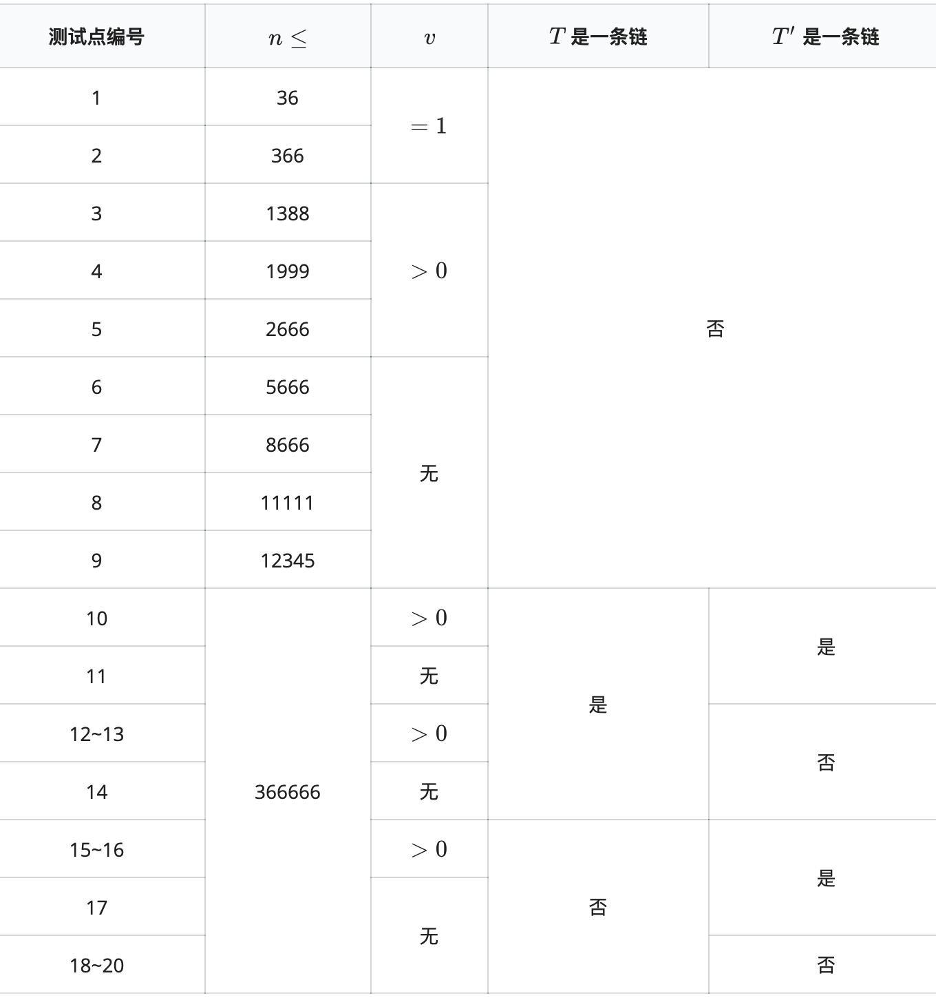

temporaryDO 是一个很菜的 OIer 。在 4 月，他在省队选拔赛的考场上见到了《林克卡特树》一题，其中 $k=0$ 的部分分是求树 $T$ 上的最长链。可怜的 temporaryDO 并不会做这道题，他在考场上抓猫耳挠猫腮都想不出一点思路。
这时，善良的板板出现在了空中，他的身上发出璀璨却柔和的光芒，荡漾在考场上。“题目并不难。” 板板说。那充满磁性的声音，让 temporaryDO 全身充满了力量。
他决定：写一个枚举点对求 LCA 算距离的 $k=0$ 的 $O(n^2\log n)$ 的部分分程序！于是， temporaryDO 选择以 $1$ 为根，建立了求 LCA 的树链剖分结构，然后写了二重 for 循环枚举点对。
然而，菜菜的 temporaryDO 不小心开小了数组，于是数组越界到了一片神秘的内存区域。但恰好的是，那片内存区域存储的区域恰好是另一棵树 $T'$。这样一来，程序并没有 RE ，但他求 $x$ 和 $y$ 的距离的时候，计算的是
$depth(x)+depth(y)−(depth(LCA(x,y))+depth'(LCA'(x,y)))$
最后程序会输出每一对点对 $i,j(i≤j)$ 的如上定义的“距离” 的最大值。 temporaryDO 的程序在评测时光荣地爆零了。但他并不服气，他决定花好几天把自己的程序跑出来。请你根据 $T$ 和 $T'$ 帮帮可怜的 temporaryDO 求出他程序的输出。
第一行包含一个整数 $n$，表示树上的节点个数；
第 $2$ 到第 $n$ 行，每行三个整数 $x,y,v$，表示 $T$ 中存在一条从 $x$ 到 $y$ 的边，其长度为 $v$；
第 $n+1$ 到第 $2n−1$，每行三个整数 $x,y,v$，表示 $T'$ 中存在一条从 $x$ 到 $y$ 的边，其长度为 $v$。
输出一行一个整数，表示 temporaryDO 的程序的输出。
6 1 2 2 1 3 0 2 4 1 2 5 -7 3 6 0 1 2 -1 2 3 -1 2 5 3 2 6 -2 3 4 8
5
对于所有数据，$n \le 366666,|v| \le 2017011328$。 详细数据范围见下表，表格中的‘‘无’’ 表示无特殊限制。

$depth(p)$ 和 $depth'(p)$ 分别表示树 $T$、$T'$ 中点 $1$ 到点 $p$ 的距离，这里规定，距离指的是经过的边的边权总和，其中 $depth(1)=0$。
$LCA(x, y)$ 和 $LCA'(x, y)$ 分别表示树 $T$、$T'$ 中点 $x$ 与点 $y$ 的最近公共祖先，即在从 $x$ 到 $y$ 的最短路径上的距离根经过边数最少的点。
 Comet OJ
Comet OJ